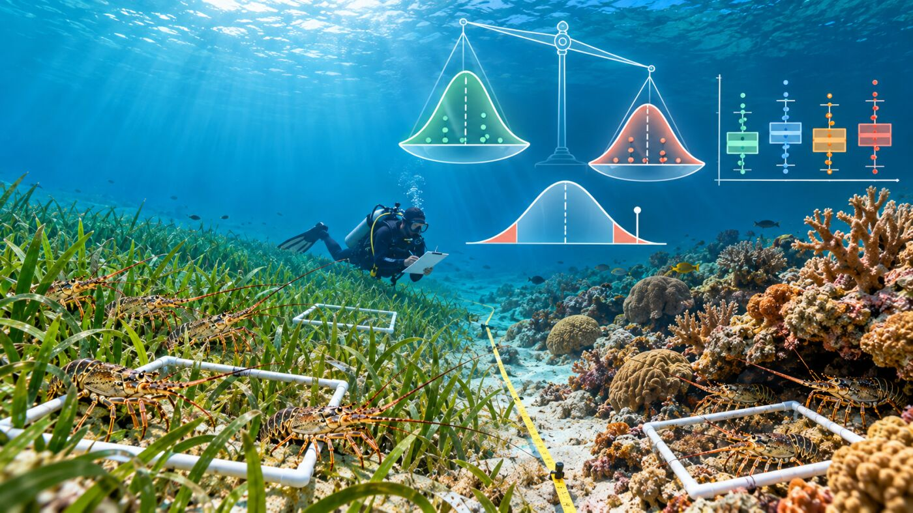
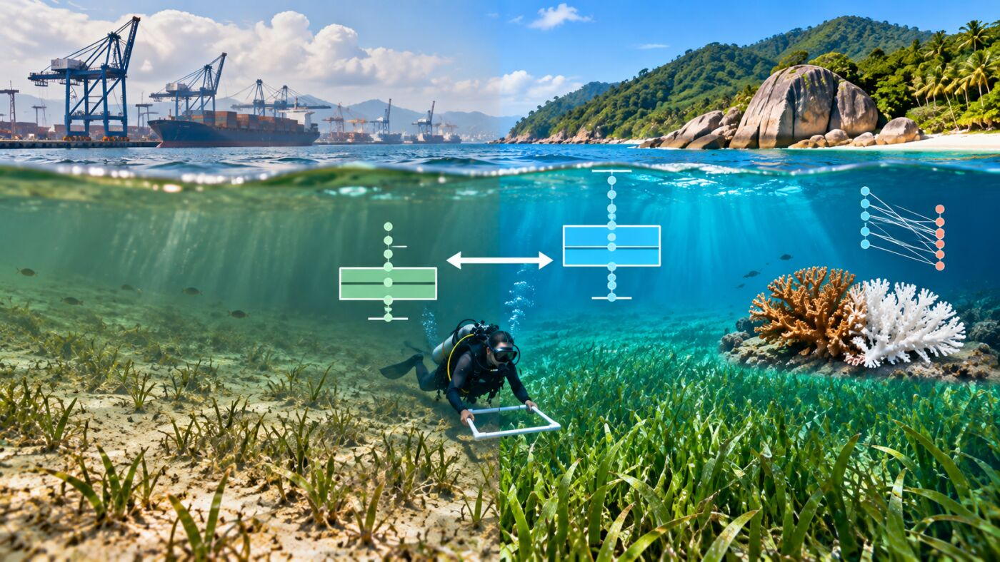
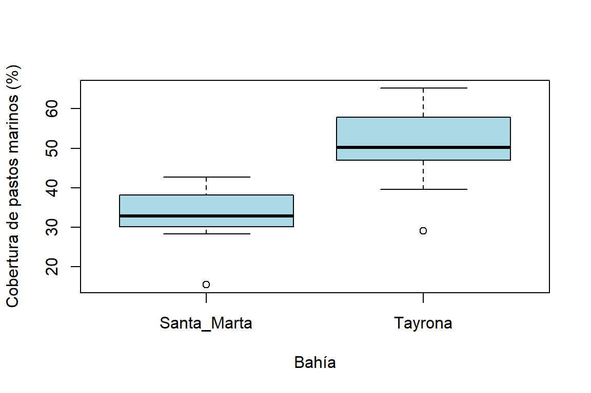
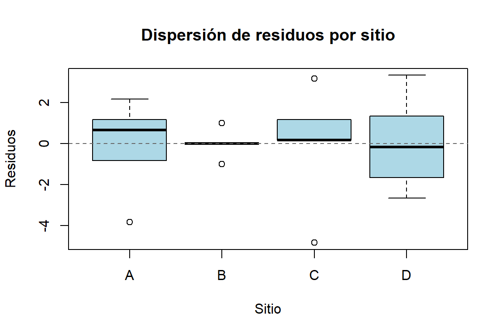
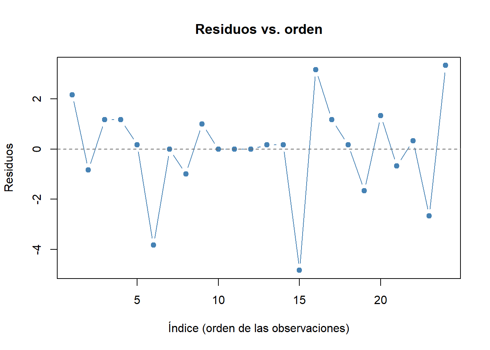
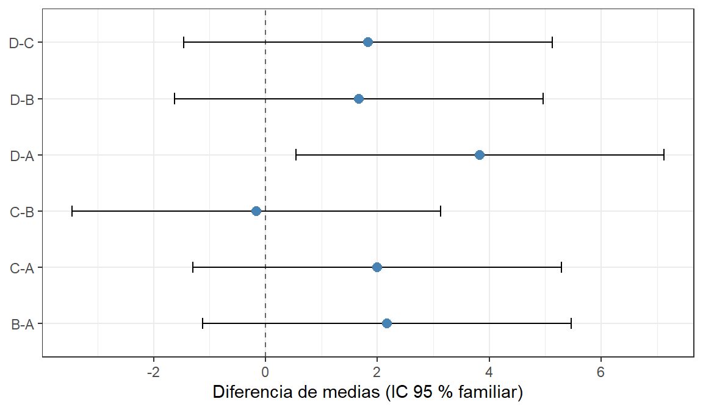
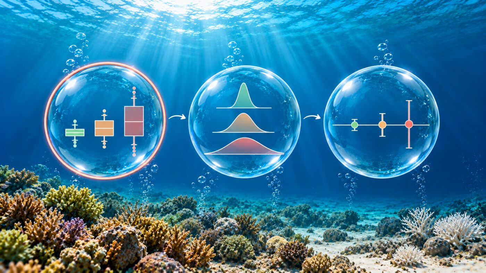
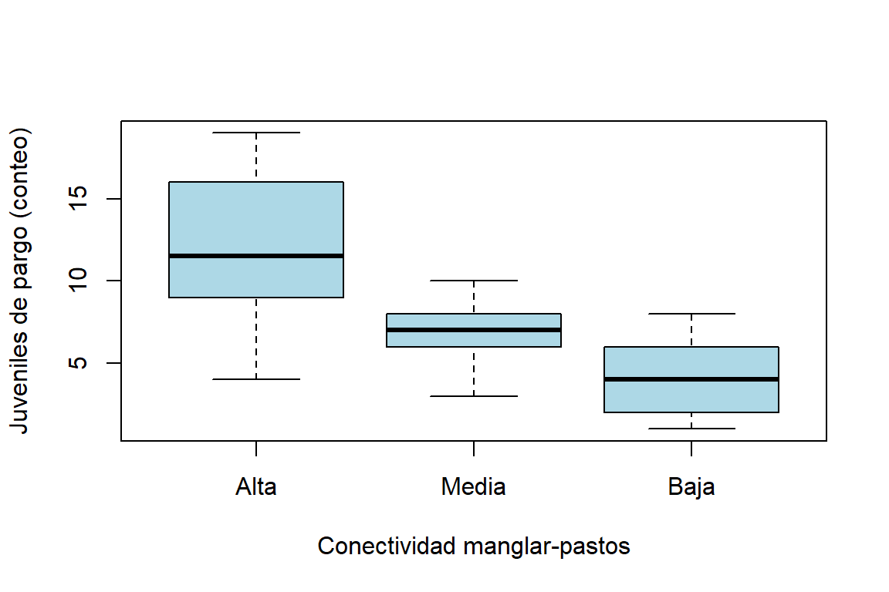

Materiales requeridos para el taller en clase
En los siguientes enlaces se podrán descargar archivos comprimidos de los dos talleres donde se pueden aplicar procedimientos para la manipulación y organización de las bases de datos requeridas en este taller de pruebas de hipótesis, con datos simulados en ecosistemas marins y estuarinos del Carbe colombaino (📰 Taller2. Pruebas de hipótesis).
- Taller2. Pruebas de hipótesis Pendiente de incluir.
Nota: una vez se descarguen los materiales, se requiere descomprimirlos antes de realizar cualquier procedimiento y seguir las orientaciones del docente para realizar los ejercicios requeridos.
Diapositivas en vivo - Slides.com

Objetivos del taller
Este taller acompaña la sesión de diapositivas “Estimación por Intervalos y Pruebas de Hipótesis” (RA1, RA2) y cierra el ciclo de la Semana 1. Al terminar, se podrá:
- Calcular e interpretar un intervalo de confianza para una media, proporción y varianza.
- Elegir y ejecutar en R la prueba de hipótesis correcta (t-test, ANOVA, Wilcoxon, Kruskal-Wallis) según los datos cumplan o no sus supuestos.
- Verificar los tres supuestos (normalidad, homocedasticidad, independencia).
- Identificar entre qué grupos están las diferencias (comparaciones post hoc) y reportar el tamaño del efecto.
- Calcular el tamaño de muestra necesario para detectar un efecto, previo a la fase de campo.
Como en el taller anterior, se reutiliza la base de macroalgas, para ver el ciclo completo: diseñar → recolectar (simular) → analizar.
Nota
Los datos siguen siendo simulados con set.seed() fijando la semilla. Construidos para ilustrar cada prueba con claridad, no para representar mediciones reales.
# Librerías requeridas
library(tidyverse)
library(ggplot2)
library(kableExtra)
library(car) # durbinWatsonTest()
library(rstatix) # games_howell_test()# Si se tiene tidyverse instalado, descomentar la siguiente línea:
# library(tidyverse)
set.seed(2026) # ReproducibilidadParte 1 — Intervalos de confianza: langosta espinosa

Pregunta: ¿Cuál es la longitud cefalotorácica promedio de los juveniles de langosta espinosa que han sido medidos, con un rango de incertidumbre apropiado?
# Tamaño de muestra
n <- 15
# Generar muestra
cefalotorax <- rnorm(n, mean = 45.2, sd = 6.1)
# Tabla con los datos
head(cefalotorax) %>%
kbl(booktabs = TRUE, digits = 3,
longtable = FALSE) %>%
kable_classic(full_width = F) %>%
kableExtra::row_spec(0, bold = TRUE)| x |
|---|
| 48.376 |
| 38.614 |
| 46.049 |
| 44.683 |
| 41.133 |
| 29.852 |
# Media muestral
xbar <- mean(cefalotorax)
# Desviación estándar
s <- sd(cefalotorax)
# Grados de libertad
df <- n - 1
# Valor crítico t
t_critico <- qt(0.975, df)
# Resultados
xbar; s; df; t_critico[1] 41.15951[1] 5.348401[1] 14[1] 2.144787Aplicando la fórmula que se vio en las diapositivas:
# Margen de error
error <- t_critico * s / sqrt(n)
# Límites del IC 95%
c(inferior = xbar - error,
superior = xbar + error)inferior superior
38.19766 44.12136 R hace este cálculo automáticamente con t.test() — se puede usar para verificar el cálculo manual:
t.test(cefalotorax)
# Prueba t + IC 95%
t.test(cefalotorax)
One Sample t-test
data: cefalotorax
t = 29.805, df = 14, p-value = 4.564e-14
alternative hypothesis: true mean is not equal to 0
95 percent confidence interval:
38.19766 44.12136
sample estimates:
mean of x
41.15951 Para discutir: si se repitiera este muestreo 100 veces, ¿qué significa exactamente que sea un intervalo “de confianza del 95%”? (Pista: no es “95% de probabilidad de que la media esté ahí”.)
IC para una proporción
El mismo principio aplica a proporciones — por ejemplo, la proporción de colonias de coral blanqueadas en un transecto:
# Casos observados
colonias_blanqueadas <- 8
# Tamaño de muestra
colonias_totales <- 40
# Prueba de una proporción
prop.test(colonias_blanqueadas, colonias_totales)
1-sample proportions test with continuity correction
data: colonias_blanqueadas out of colonias_totales, null probability 0.5
X-squared = 13.225, df = 1, p-value = 0.0002762
alternative hypothesis: true p is not equal to 0.5
95 percent confidence interval:
0.09614522 0.36137437
sample estimates:
p
0.2 IC para una varianza
Y también a la varianza — útil cuando lo que interesa no es la media sino qué tan variable es algo (p. ej., la salinidad en un estuario):
# Reproducibilidad
set.seed(2026)
# Generar muestra
salinidad <- rnorm(20,
mean = 28,
sd = 3.5)
# Tamaño muestral
n <- length(salinidad)
# Varianza muestral
s2 <- var(salinidad)
# Valores críticos χ²
chi_inferior <- qchisq(0.025, df = n - 1)
chi_superior <- qchisq(0.975, df = n - 1)
# Intervalo de confianza
ic_varianza <- c((n - 1) * s2 / chi_superior,
(n - 1) * s2 / chi_inferior)
n; s2; chi_inferior; ic_varianza[1] 20[1] 11.35522[1] 8.906516[1] 6.56724 24.22374A diferencia de la media, el IC de una varianza usa la distribución chi-cuadrado (no la t) — por eso la fórmula luce distinta, aunque la lógica (“un rango plausible, no un solo número”) es la misma.
Como con la media (t.test()) y la proporción (prop.test()), existe un atajo que hace este cálculo de forma automática:
# Requiere install.packages("EnvStats")
EnvStats::varTest(salinidad)$statistic
Chi-Squared
215.7491
$parameters
df
19
$p.value
[1] 0
$estimate
variance
11.35522
$null.value
variance
1
$alternative
[1] "two.sided"
$method
[1] "Chi-Squared Test on Variance"
$data.name
[1] "salinidad"
$conf.int
LCL UCL
6.56724 24.22374
attr(,"conf.level")
[1] 0.95
attr(,"class")
[1] "htestEnvStats"Parte 2 — t-test: pastos marinos en dos bahías

Pregunta: ¿Difiere la cobertura de pastos marinos entre la Bahía de Santa Marta (alto tráfico portuario) y una zona de bajo tráfico como el Parque Tayrona?
# Reproducibilidad
set.seed(2026)
# Definir grupos
bahia <- gl(2, 12, labels = c("Santa_Marta", "Tayrona"))
# Generar coberturas
cobertura <- round(rnorm(24,
mean = c(38, 52)[as.integer(bahia)],
sd = 9), 1)
# Crear base de datos
pastos <- data.frame(bahia, cobertura)
# Tabla con los datos
head(pastos) %>%
kbl(booktabs = TRUE, longtable = FALSE) %>%
kable_classic(full_width = F) %>%
kableExtra::row_spec(0, bold = TRUE)| bahia | cobertura |
|---|---|
| Santa_Marta | 42.7 |
| Santa_Marta | 28.3 |
| Santa_Marta | 39.3 |
| Santa_Marta | 37.2 |
| Santa_Marta | 32.0 |
| Santa_Marta | 15.4 |
# Comparar coberturas
boxplot(cobertura ~ bahia, data = pastos,
col = "lightblue",
xlab = "Bahía",
ylab = "Cobertura de pastos marinos (%)")
TipVersión con
ggplot2
# Construir gráfico
ggplot(pastos, aes(x = bahia, y = cobertura)) +
geom_boxplot(fill = "lightblue") +
# Etiquetas de ejes
labs(x = "Bahía",
y = "Cobertura de pastos marinos (%)") +
# Aplicar tema
theme_bw()# Comparar dos medias
t.test(cobertura ~ bahia, data = pastos)
Welch Two Sample t-test
data: cobertura by bahia
t = -5.1052, df = 19.591, p-value = 5.739e-05
alternative hypothesis: true difference in means between group Santa_Marta and group Tayrona is not equal to 0
95 percent confidence interval:
-25.64633 -10.75367
sample estimates:
mean in group Santa_Marta mean in group Tayrona
32.79167 50.99167 R llama a esto “Welch Two Sample t-test” — por defecto, t.test() en R ya usa la corrección de Welch (no asume varianzas iguales).
t-test pareado: cobertura de coral antes/después de un blanqueamiento
El t-test de la sección anterior compara dos grupos independientes (dos bahías distintas). Pero hay otra situación, igual de común, y conceptualmente distinta: medir el mismo sitio dos veces — por ejemplo, la pregunta que se planteó en las diapositivas: ¿cambió la cobertura de coral vivo antes y después de un evento de blanqueamiento?
# Reproducibilidad
set.seed(2026)
# Definir número de sitios
n_sitios <- 12
# Generar cobertura inicial
cobertura_antes <- round(rnorm(n_sitios,
mean = 45,
sd = 8), 1)
# Simular reducción
reduccion <- round(rnorm(n_sitios,
mean = 10,
sd = 3), 1)
# Calcular cobertura final
cobertura_despues <- round(pmax(0, cobertura_antes - reduccion), 1)
# Crear base de datos
blanqueamiento <- data.frame(
arrecife = paste0("Arrecife_", 1:n_sitios),
cobertura_antes,
cobertura_despues
)Como cada arrecife se midió dos veces, las dos columnas no son independientes — el arrecife que tenía más cobertura antes probablemente sigue teniendo más después. Ignorar esa dependencia desperdicia información. Por eso se usa paired = TRUE:
# Comparar mediciones pareadas
t.test(blanqueamiento$cobertura_antes,
blanqueamiento$cobertura_despues,
paired = TRUE)
Paired t-test
data: blanqueamiento$cobertura_antes and blanqueamiento$cobertura_despues
t = 9.9057, df = 11, p-value = 8.126e-07
alternative hypothesis: true mean difference is not equal to 0
95 percent confidence interval:
7.512316 11.804351
sample estimates:
mean difference
9.658333 Se puede comparar ese resultado con lo que pasaría si (incorrectamente) se trataran las dos columnas como grupos independientes:
# Comparar mediciones pareadas
t.test(blanqueamiento$cobertura_antes,
blanqueamiento$cobertura_despues,
paired = FALSE)
Welch Two Sample t-test
data: blanqueamiento$cobertura_antes and blanqueamiento$cobertura_despues
t = 3.3227, df = 20.913, p-value = 0.003247
alternative hypothesis: true difference in means is not equal to 0
95 percent confidence interval:
3.611822 15.704845
sample estimates:
mean of x mean of y
40.37500 30.71667 ¿Se observa la diferencia? Ambos detectan una diferencia significativa, pero el t-test pareado tiene un intervalo de confianza mucho más angosto y un p-valor muchísimo más pequeño (8.1e-07 vs. 0.003).
Nota
Un t-test pareado con paired = TRUE es matemáticamente idéntico a un t-test de una muestra sobre las diferencias (t.test(cobertura_antes - cobertura_despues)) — se recomienda comprobarlo y comparar ambos resultados.
Parte 3 — ANOVA de una vía: retomando la riqueza de macroalgas

Esta es la misma base de datos que se analizó como diseño completamente al azar en el taller anterior — ahora se aborda desde el lado de la prueba de hipótesis. Se reinicia la semilla para reproducirlo exactamente:
# Reproducibilidad
set.seed(2026)
# Definir sitios
sitio <- gl(4, 6, labels = c("A", "B", "C", "D"))
# Asignar medias
medias_sitio <- c(12, 14, 13, 15)[as.integer(sitio)]
# Generar riqueza
riqueza <- round(rnorm(24, mean = medias_sitio, sd = 2))
# Crear base de datos
macroalgas <- data.frame(sitio, riqueza)
# tabla con los datos
head(macroalgas, 8) %>%
kbl(booktabs = TRUE, longtable = FALSE) %>%
kable_classic(full_width = F) %>%
kableExtra::row_spec(0, bold = TRUE)| sitio | riqueza |
|---|---|
| A | 13 |
| A | 10 |
| A | 12 |
| A | 12 |
| A | 11 |
| A | 7 |
| B | 13 |
| B | 12 |
# Ajustar modelo ANOVA
mod_ca <- aov(riqueza ~ sitio, data = macroalgas)
# Consultar resultados
summary(mod_ca) Df Sum Sq Mean Sq F value Pr(>F)
sitio 3 44.33 14.78 3.561 0.0326 *
Residuals 20 83.00 4.15
---
Signif. codes: 0 '***' 0.001 '**' 0.01 '*' 0.05 '.' 0.1 ' ' 1La riqueza de macroalgas difiere entre sitios (F = 3,56; gl = 3 y 20; p = 0,033). El valor p indica que hay diferencias, pero no qué tan grandes son. Para eso se calcula el tamaño del efecto (η²), la proporción de la variación total que explica el factor sitio:
# Extraer sumas de cuadrados
sc <- summary(mod_ca)[[1]][["Sum Sq"]]
# Calcular eta cuadrado
eta2 <- sc[1] / sum(sc)
eta2[1] 0.3481675El sitio explica cerca del 35 % de la variación en la riqueza (η² = 0,35), un efecto grande según las referencias de Cohen (η² = 0,01, 0,06 y 0,14 para efectos pequeño, mediano y grande). Antes de interpretar qué sitios difieren, se verifican los supuestos del modelo (Sección 6).
Parte 4 — ¿Se cumplen los supuestos?

Antes de confiar en ese resultado, se verifican los tres supuestos del ANOVA: normalidad, homocedasticidad e independencia de los residuos. Se cumplen los supuestos de normalidad y de homogeneidad (valor p > 0,05).
shapiro.test(residuals(mod_ca)) # Normalidad de los residuos
Shapiro-Wilk normality test
data: residuals(mod_ca)
W = 0.92935, p-value = 0.09426bartlett.test(riqueza ~ sitio,
data = macroalgas) # Homocedasticidad
Bartlett test of homogeneity of variances
data: riqueza by sitio
Bartlett's K-squared = 7.4232, df = 3, p-value = 0.05957Un número (el p-valor) no muestra los detalles de las diferencias — conviene acompañar siempre la prueba numérica con una inspección visual:
# Dividir ventana gráfica
par(mfrow = c(1, 2))
# Evaluar normalidad
qqnorm(residuals(mod_ca), main = "Normalidad de los residuos")
qqline(residuals(mod_ca), col = "steelblue", lwd = 2)
# Revisar distribución
hist(residuals(mod_ca),
main = "Distribución de los residuos",
xlab = "Residuos",
col = "lightblue")
# Restaurar ventana
par(mfrow = c(1, 1))# Comparar dispersión por sitio
boxplot(residuals(mod_ca) ~ macroalgas$sitio,
xlab = "Sitio",
ylab = "Residuos",
col = "lightblue",
main = "Dispersión de residuos por sitio")
# Marcar referencia cero
abline(h = 0, lty = 2, col = "gray40")
Independencia de los residuos
La independencia se asegura, en primer lugar, desde el diseño — con aleatorización y réplicas verdaderas, como se practicó en la Parte 0 del taller anterior. Ninguna prueba estadística corrige una pseudorreplicación. Aun así, se puede evaluar si los residuos muestran autocorrelación con el estadístico de Durbin-Watson (paquete car). Para esto se requiere expresar el ANOVA como un modelo lineal con lm(), que es el mismo modelo ajustado con aov():
# Expresar el ANOVA como modelo lineal
modelo <- lm(riqueza ~ sitio, data = macroalgas)
# Independencia de los residuos
durbinWatsonTest(modelo) lag Autocorrelation D-W Statistic p-value
1 -0.3427041 2.49498 0.532
Alternative hypothesis: rho != 0La hipótesis nula es que no hay autocorrelación entre residuos consecutivos (ρ = 0). El estadístico D-W varía entre 0 y 4: valores cercanos a 2 indican independencia, valores cercanos a 0 sugieren autocorrelación positiva y valores cercanos a 4, autocorrelación negativa. Aquí D-W ≈ 2,49 y p ≈ 0,56 (> 0,05), por lo que no hay evidencia de autocorrelación y se cumple el supuesto de independencia.
Como con los otros supuestos, la prueba numérica se acompaña de una inspección visual: el gráfico de los residuos en el orden de las observaciones.
# Residuos en el orden de las observaciones
plot(residuals(modelo), type = "b",
xlab = "Índice (orden de las observaciones)",
ylab = "Residuos",
main = "Residuos vs. orden",
pch = 19, col = "steelblue")
# Marcar referencia cero
abline(h = 0, lty = 2, col = "gray40")
Si los residuos son independientes, oscilan alrededor de cero sin rachas largas por encima o por debajo de la línea. Una secuencia de varios residuos positivos seguidos de varios negativos indicaría que observaciones cercanas se parecen entre sí (por ejemplo, cuadrantes contiguos en el mismo transecto).
Nota
- Durbin-Watson evalúa la autocorrelación según el orden de las filas. Solo tiene sentido si ese orden refleja la secuencia real de muestreo (en el tiempo o a lo largo del espacio). Si las filas están ordenadas por sitio o al azar, la prueba dice poco sobre la dependencia real de los datos.
durbinWatsonTest()calcula el p-valor por remuestreo (bootstrap), así que puede variar ligeramente entre ejecuciones (p. ej., 0,56 vs. 0,58). El estadístico D-W no cambia.
En el Q-Q plot, los puntos deberían seguir aproximadamente la línea diagonal (aquí lo hacen, consistente con el Shapiro no significativo). En el boxplot de residuos por sitio, la dispersión debería ser parecida entre grupos — si un sitio se ve claramente más disperso que los demás, eso es una señal visual de heterocedasticidad incluso antes de correr bartlett.test(). En el gráfico de residuos vs. orden, la ausencia de rachas es consistente con el Durbin-Watson no significativo.
Con los tres supuestos verificados (normalidad, homocedasticidad e independencia), el ANOVA de la Parte 3 es confiable tal como está.
¿Entre qué sitios están las diferencias? Comparaciones post hoc
El ANOVA indica que al menos un sitio difiere, pero no cuáles. La prueba de Tukey compara todos los pares de sitios controlando el error tipo I acumulado (con 4 sitios hay 6 pares):
# Comparaciones de Tukey
tukey_ca <- TukeyHSD(mod_ca)
tukey_ca Tukey multiple comparisons of means
95% family-wise confidence level
Fit: aov(formula = riqueza ~ sitio, data = macroalgas)
$sitio
diff lwr upr p adj
B-A 2.1666667 -1.1253075 5.458641 0.2838204
C-A 2.0000000 -1.2919741 5.291974 0.3494649
D-A 3.8333333 0.5413592 7.125307 0.0188972
C-B -0.1666667 -3.4586408 3.125307 0.9989493
D-B 1.6666667 -1.6253075 4.958641 0.5037771
D-C 1.8333333 -1.4586408 5.125307 0.4233027# Intervalos de confianza de Tukey
tukey_ca$sitio %>%
as_tibble(rownames = "par") %>%
ggplot(aes(x = diff, y = par)) +
geom_vline(xintercept = 0, linetype = 2, color = "gray40") +
geom_errorbar(aes(xmin = lwr, xmax = upr), width = 0.2) + # Barras horizontales
geom_point(size = 2.5, color = "steelblue") +
labs(x = "Diferencia de medias (IC 95 % familiar)", y = NULL) +
theme_bw()
Solo el par D–A difiere (p = 0,019): su intervalo es el único que no cruza la línea del cero. Los otros cinco pares no difieren. Un ANOVA significativo no implica que todos los grupos sean distintos entre sí.
TipCómo reportar el resultado
En la sección de resultados de un artículo o de la tesis, se reportan el estadístico, los grados de libertad, el valor p, el tamaño del efecto y las comparaciones post hoc. Por ejemplo:
La riqueza de macroalgas difirió entre sitios (ANOVA de una vía, F3,20 = 3,56; p = 0,033; η² = 0,35). La prueba de Tukey indicó que solo los sitios D y A difieren (diferencia = 3,8 especies; IC 95 %: 0,5–7,1; p = 0,019).
Esta estructura es la que se espera en la Evidencia 1.
Nota
El material complementario de este taller (Sección 12) amplía las comparaciones múltiples: Dunnett (comparación contra un control), Games-Howell (varianzas desiguales), pruebas por pares con corrección de Holm y alternativas no paramétricas.
Parte 5 —Alternativas no paramétricas
Si la normalidad fallara, Kruskal-Wallis es la alternativa directa al ANOVA:
kruskal.test(riqueza ~ sitio, data = macroalgas)
Kruskal-Wallis rank sum test
data: riqueza by sitio
Kruskal-Wallis chi-squared = 9.5771, df = 3, p-value = 0.02252Y Wilcoxon es la alternativa al t-test de dos grupos — se aplica al ejemplo de los pastos marinos:
wilcox.test(cobertura ~ bahia, data = pastos)
Wilcoxon rank sum test with continuity correction
data: cobertura by bahia
W = 10, p-value = 0.000382
alternative hypothesis: true location shift is not equal to 0
Nota
Es posible que aparezca una advertencia (“cannot compute exact p-value with ties”). Es normal cuando hay valores repetidos entre los grupos; R simplemente usa una aproximación — no invalida el resultado.
Para discutir: se compara el p-valor del t-test (Sección 4) con el de Wilcoxon. ¿Llegan a la misma conclusión? ¿Por qué tiene sentido que sea así cuando los datos sí son razonablemente normales?
Parte 6 — Cuando solo falla la homocedasticidad: Prueba de Welch

Ahora un caso deliberadamente distinto: cobertura de coral en 3 zonas con variabilidad muy distinta entre ellas ((1) una zona protegida y estable, (2) una degradada y (3) una muy heterogénea).
# Reproducibilidad
set.seed(2026)
# Definir zonas
zona <- gl(3, 10, labels = c("Protegida", "Uso_multiple", "Degradada"))
# Asignar desviaciones
sd_zona <- c(3, 8, 15)[as.integer(zona)]
# Asignar medias
media_zona <- c(55, 48, 40)[as.integer(zona)]
# Generar cobertura
cobertura_coral <- round(
pmin(100, pmax(0, rnorm(30, mean = media_zona, sd = sd_zona))), 1
)
# Crear base de datos
coral <- data.frame(zona, cobertura_coral)
# tabla con los datos
head(coral, 10) %>%
kbl(booktabs = TRUE, longtable = FALSE) %>%
kable_classic(full_width = F) %>%
kableExtra::row_spec(0, bold = TRUE)| zona | cobertura_coral |
|---|---|
| Protegida | 56.6 |
| Protegida | 51.8 |
| Protegida | 55.4 |
| Protegida | 54.7 |
| Protegida | 53.0 |
| Protegida | 47.5 |
| Protegida | 52.8 |
| Protegida | 51.9 |
| Protegida | 55.3 |
| Protegida | 53.6 |
Las desviaciones de cada zona, muestran heterogeneidad o diferencias importantes.
# Comparar desviaciones
tapply(coral$cobertura_coral, coral$zona, sd) Protegida Uso_multiple Degradada
2.571727 8.526846 16.600552
Nota
La cobertura (%) está acotada entre 0 y 100 — el pmin()/pmax() de arriba es un “efecto piso” real, no un error de simulación: en la zona Degradada, con media baja y sd alta, algunos valores simulados caerían por debajo de 0 sin ese límite. Esta es exactamente la razón por la que, más adelante, se abordarán los modelos lineales generalizados (GLM) con familia binomial o beta — diseñados para variables de respuesta acotadas como esta, donde ANOVA (que asume un rango continuo sin límites) es solo una aproximación razonable.
bartlett.test(cobertura_coral ~ zona, data = coral)
Bartlett test of homogeneity of variances
data: cobertura_coral by zona
Bartlett's K-squared = 21.657, df = 2, p-value = 1.982e-05El p-valor es muy pequeño: sí hay heterocedasticidad. Se compara el ANOVA clásico contra el ANOVA de Welch:
# ANOVA clasico (asume varianzas iguales - no es lo ideal aqui)
summary(aov(cobertura_coral ~ zona, data = coral)) Df Sum Sq Mean Sq F value Pr(>F)
zona 2 250 124.9 1.056 0.362
Residuals 27 3194 118.3 # ANOVA de Welch (no asume varianzas iguales)
oneway.test(cobertura_coral ~ zona, data = coral, var.equal = FALSE)
One-way analysis of means (not assuming equal variances)
data: cobertura_coral and zona
F = 3.1626, num df = 2.000, denom df = 13.248, p-value = 0.07536Se observa que el estadístico F, los grados de libertad y el p-valor cambian entre ambos. Cuando bartlett.test() alerta sobre heterocedasticidad, oneway.test(var.equal = FALSE) es la corrección correcta para 3 o más grupos — el equivalente al “Welch” que t.test() ya aplica automáticamente para 2 grupos.
Con esta semilla, ninguno de los dos es significativo (ANOVA clásico p = 0,36; Welch p = 0,075), así que no hay evidencia suficiente de diferencias entre zonas con 10 réplicas por zona. Llama la atención que el valor p de Welch sea menor que el del ANOVA clásico: el ANOVA de Welch no siempre es “más conservador”. Cuando las varianzas son muy desiguales, el ANOVA clásico mezcla la dispersión de todas las zonas en un único error y puede perder potencia.
Parte 7 — Potencia y tamaño de muestra

Caso 1 — planeando un t-test: se quiere detectar una diferencia de 5 puntos porcentuales de cobertura de coral (con una desviación estándar esperada de 8), con una potencia del 80%:
# Calcular tamaño muestral
power.t.test(delta = 5,
sd = 8,
sig.level = 0.05,
power = 0.80)
Two-sample t test power calculation
n = 41.16902
delta = 5
sd = 8
sig.level = 0.05
power = 0.8
alternative = two.sided
NOTE: n is number in *each* groupCaso 2 — planeando un ANOVA: se puede usar la variabilidad observada en un estudio piloto (o, como aquí, en el propio taller anterior) para estimar cuántas réplicas se necesitarían:
# Extraer cuadrados medios
tabla_anova <- summary(mod_ca)[[1]]
ms_entre <- tabla_anova["sitio", "Mean Sq"]
ms_dentro <- tabla_anova["Residuals", "Mean Sq"]
# Estimar varianza entre sitios
n_replicas_actual <- 6
between_var <- (ms_entre - ms_dentro) / n_replicas_actual
# Calcular potencia ANOVA
power.anova.test(groups = 4,
between.var = between_var,
within.var = ms_dentro,
sig.level = 0.05,
power = 0.80)
Balanced one-way analysis of variance power calculation
groups = 4
n = 9.550265
between.var = 1.771296
within.var = 4.15
sig.level = 0.05
power = 0.8
NOTE: n is number in each groupConviene comparar el n sugerido con el n = 6 que realmente se usó en el taller anterior — esa comparación, hecha antes de salir a campo, es exactamente lo que evita gastar presupuesto en un diseño con poca potencia.
TipUna alternativa: el paquete
pwr
power.t.test() y power.anova.test() (de R base) trabajan con las unidades originales de la variable (delta, sd). El paquete pwr —muy usado en ecología— trabaja con tamaños de efecto estandarizados (d de Cohen para 2 grupos, f de Cohen para 3+):
# Requiere install.packages("pwr")
pwr::pwr.t.test(d = 0.8, power = 0.80, sig.level = 0.05)
# f de Cohen derivado del propio modelo (Caso 2), no un valor genérico de libro.
# Ojo: power.anova.test() define between.var con divisor (k-1) (la convención de var()),
# mientras que la f de Cohen usa divisor k — hay que ajustar por ese factor para
# que ambas funciones respondan exactamente la misma pregunta:
k <- 4
f_cohen <- sqrt((between_var * (k - 1) / k) / ms_dentro)
pwr::pwr.anova.test(k = k, f = f_cohen, power = 0.80, sig.level = 0.05)Ambos enfoques responden la misma pregunta — de hecho, el pwr.anova.test() de arriba, alimentado con el f_cohen ajustado a partir del propio between_var/ms_dentro, arroja el mismo n ≈ 9.55 que ya se obtuvo con power.anova.test() en el Caso 2 (verificado): son la misma matemática expresada en dos convenciones de varianza distintas. pwr es útil cuando se piensa en términos de “efecto pequeño/mediano/grande” en vez de valores concretos de la variable.
Parte 8 — Estudio de caso: elección autónoma de la prueba

A continuación se presentan el contexto y los datos, la decisión se toma con los mismos criterios de la tabla “¿qué prueba usar?” de las diapositivas.
NotaEl contexto
Un equipo quiere saber si la conectividad de un manglar con praderas de pastos marinos cercanas (alta, media, baja) afecta el número de juveniles de pargo (Lutjanus spp.) que se refugian en sus raíces. Se muestrearon 10 sitios de manglar por nivel de conectividad y se contaron los juveniles observados en un transecto estándar en cada uno.
Antes de escribir código, conviene responder:
- ¿Cuántos grupos se comparan? Con eso, ¿cuáles de las pruebas de la tabla de síntesis (t-test, t-test de Welch, ANOVA, ANOVA de Welch, Wilcoxon, Kruskal-Wallis) quedan descartadas de entrada, sin necesidad de revisar ningún supuesto?
- De las que quedan, ¿qué se necesita revisar antes de poder elegir entre ellas?
A continuación se simulan los datos y se corren los diagnósticos:
# Reproducibilidad
set.seed(2026)
# Definir conectividad
conectividad <- gl(3, 10, labels = c("Alta", "Media", "Baja"))
# Asignar tasas esperadas
lambda <- c(Alta = 14, Media = 8, Baja = 4)[conectividad]
# Generar conteos
juveniles_pargo <- rpois(30, lambda = lambda)
# Crear base de datos
pargo <- data.frame(conectividad, juveniles_pargo)
# tabla con los datos
head(pargo, 10) %>%
kbl(booktabs = TRUE, longtable = FALSE) %>%
kable_classic(full_width = F) %>%
kableExtra::row_spec(0, bold = TRUE)| conectividad | juveniles_pargo |
|---|---|
| Alta | 15 |
| Alta | 9 |
| Alta | 6 |
| Alta | 19 |
| Alta | 17 |
| Alta | 12 |
| Alta | 16 |
| Alta | 11 |
| Alta | 10 |
| Alta | 4 |
# Comparar conteos
boxplot(juveniles_pargo ~ conectividad, data = pargo,
col = "lightblue",
xlab = "Conectividad manglar-pastos",
ylab = "Juveniles de pargo (conteo)")
# Ajustar modelo ANOVA
mod_pargo <- aov(juveniles_pargo ~ conectividad, data = pargo)
# Evaluar normalidad
shapiro.test(residuals(mod_pargo))
Shapiro-Wilk normality test
data: residuals(mod_pargo)
W = 0.98288, p-value = 0.896# Evaluar homogeneidad
bartlett.test(juveniles_pargo ~ conectividad, data = pargo)
Bartlett test of homogeneity of variances
data: juveniles_pargo by conectividad
Bartlett's K-squared = 7.2879, df = 2, p-value = 0.02615Con esos dos resultados en mano, se debe tomar una decisión antes de seguir leyendo: ¿ANOVA a una vía, ANOVA de Welch, o Kruskal-Wallis?
TipVerificación del razonamiento (clic para revelar)
1. Grupos: son 3 (Alta/Media/Baja), así que los dos t-test quedan descartados de entrada — se necesita una prueba de 3+ grupos.
2. Lo que hay que revisar: normalidad de los residuos (Shapiro) y homocedasticidad (Bartlett) — exactamente igual que en la Parte 3/4, pero aquí no se debe asumir cuál de los dos va a fallar.
El resultado real (con esta semilla): Shapiro da p = 0.896 (¡no hay problema de normalidad!), pero Bartlett da p = 0.026 (sí hay heterocedasticidad — la varianza de conteos tiende a crecer con la media, un patrón típico de datos de conteo). Es la situación exactamente inversa a la Parte 5: aquí falla la homocedasticidad, no la normalidad.
Por lo tanto, la prueba correcta es la prueba de Welch (Sección 8), no Kruskal-Wallis — Kruskal-Wallis es la respuesta cuando falla la normalidad, no la homocedasticidad.
# Prueba de Welch
oneway.test(juveniles_pargo ~ conectividad,
data = pargo,
var.equal = FALSE)
One-way analysis of means (not assuming equal variances)
data: juveniles_pargo and conectividad
F = 11.455, num df = 2.000, denom df = 16.867, p-value = 0.0007205Para observar la comparación completa, así se ven las tres alternativas lado a lado con estos datos:
cat("ANOVA una vía: p =", summary(mod_pargo)[[1]][["Pr(>F)"]][1], "\n")ANOVA una vía: p = 6.775716e-05 cat("ANOVA de Welch: p =", oneway.test(juveniles_pargo ~ conectividad, data = pargo, var.equal = FALSE)$p.value, "\n")ANOVA de Welch: p = 0.0007205385 cat("Kruskal-Wallis: p =", kruskal.test(juveniles_pargo ~ conectividad, data = pargo)$p.value, "\n")Kruskal-Wallis: p = 0.0007317319 Las tres pruebas coinciden en la conclusión esta vez (valor p < 0.05), pero eso es casualidad de esta base de datos — no una razón para omitir el diagnóstico. La prueba correcta es la que cumple los diagnósticos de Shapiro y Bartlett.
¿Entre qué niveles de conectividad están las diferencias? Como la prueba elegida fue Welch, la comparación post hoc coherente es Games-Howell, que tampoco asume varianzas iguales (Tukey, visto en la Sección 6.2, sí las asume):
# Comparaciones múltiples sin asumir varianzas iguales
games_howell_test(pargo, juveniles_pargo ~ conectividad)# A tibble: 3 × 8
.y. group1 group2 estimate conf.low conf.high p.adj p.adj.signif
* <chr> <chr> <chr> <dbl> <dbl> <dbl> <dbl> <chr>
1 juveniles_pargo Alta Media -4.8 -9.26 -0.336 0.035 *
2 juveniles_pargo Alta Baja -7.9 -12.4 -3.38 0.001 ***
3 juveniles_pargo Media Baja -3.1 -5.70 -0.504 0.018 * Los tres pares difieren (p < 0,05): el número de juveniles disminuye de forma consistente de conectividad alta a media y de media a baja.
Cierre — Una base para el futuro proyecto de grado
Como esta cohorte de maestría inicia, es probable que todavía no se cuente con un diseño, muestreo ni datos propios. Este cierre tiene dos partes:
Actividad en clase (10 minutos, sin código)
En una frase, se puede escribir la idea tentativa de investigación (aunque sea muy preliminar). Luego, se puede responder en papel:
- ¿Cuál sería la unidad experimental? ¿Y la unidad de observación?
- De los 4 tipos de diseño (Sección 5 y el taller anterior), ¿cuál se ajusta mejor a la idea?
- Según la tabla de síntesis de las diapositivas, ¿qué prueba se usaría?
No se necesitan datos para esto — es aplicar el marco conceptual a una idea todavía en borrador. Ese es, de hecho, el momento correcto para pensarlo.
Antes de la próxima sesión (tarea corta)
Se puede adaptar el código de este taller a la propia idea, con valores simulados pero plausibles para el sistema de estudio:
- Se copia la sección que más se parezca al diseño propuesto (Sección 4 o Sección 5).
- Se cambian los nombres de las variables y las medias simuladas por lo que se esperaría encontrar en el propio tema.
- Se puede ejecutar
shapiro.test(),bartlett.test()y la prueba correspondiente. ¿La salida de R tiene sentido con lo que se planteó?
Esto es una manera sencilla de poner a prueba el razonamiento. Cuando más adelante se trabaje con datos reales (propios o de un artículo publicado en la línea de investigación correspondiente), ya se tendrá practicado el flujo completo.
Material de apoyo

Para repasar y profundizar después de la sesión:
- Cuestionario · Estimación por intervalos y pruebas de hipótesis — 11 preguntas de opción múltiple con pista y explicación, basadas en las Partes 1 a 8 de este taller.
- Guía de práctica · Estimación e inferencia — 4 escenarios nuevos para elegir e implementar la prueba correcta y 4 análisis con errores de inferencia para identificar.
- Material complementario · Pruebas de hipótesis con insectos acuáticos — ruta de decisión completa, t de una muestra, tamaño del efecto, prueba de permutación, comparaciones múltiples (Tukey, Dunnett, Games-Howell, Holm) y tamaño de muestra por cobertura.
Referencias
Quinn, G. P., & Keough, M. J. (2024). Experimental Design and Data Analysis for Biologists (2nd ed.). Cambridge University Press.enlace_ejercicios
Logan, M. (2011). Biostatistical Design and Analysis Using R. Wiley-Blackwell. enlace_ejercicios enlace_libro
Calvo Sendín, J. F. (2025). Análisis estadístico de datos biológicos en R. Universidad de Murcia. — Consultado como referencia técnica para la distinción Welch/Kruskal-Wallis. enlace
Nota
Los ejemplos y bases de datos de este taller son de elaboración propia para este curso; no reproducen los ejercicios ni el código de las fuentes citadas.